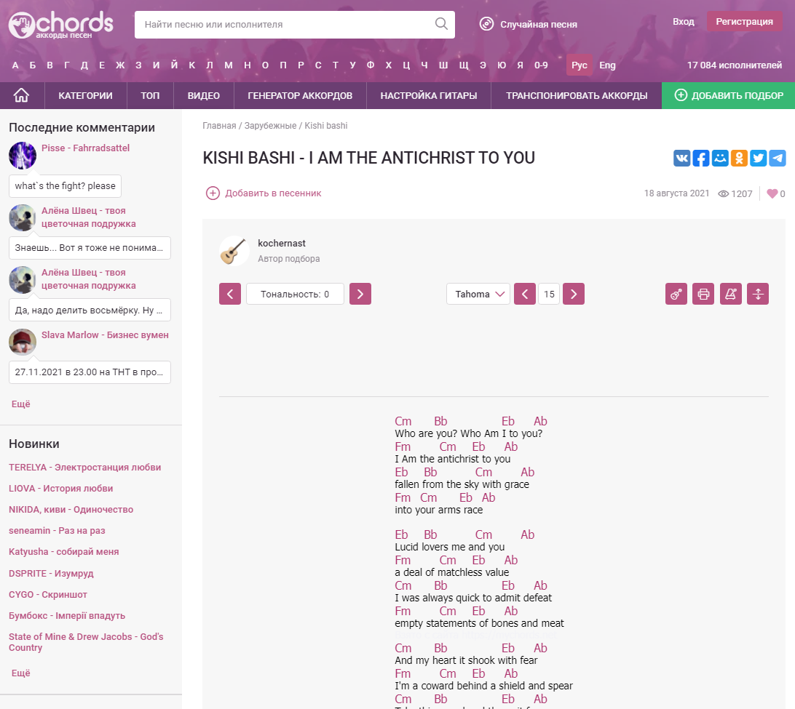

Написание собственной коспозиции будет казаться легче, если узнать как написать кавер - собственную версию уже существующей композиции. В этой части вы узнаете из чего состоит гитарная композиция, и каким образом подбирать ноты так, чтобы звучание не было хаотичным.
Гитарные каверы композиций в основном состоят из Баса, Аккомпанемента и Мелодии. Это три важные составляющие, без которых у вас не получиться создать кавер – свою собственную версию уже существующей композиции.
Для начала нужно подобрать аккорды, которые будут созвучны с песней. В качестве примера возьмём «I am the antichrist to you», для этой композиции уже подобраны аккорды на сайте mychords. На этом сайте есть множество уже подобранных для композиций аккордов. На странице вы также увидите блок со стрелками с текстом «тональность: 0», это значит, что предложенные аккорды полностью соответствуют тональности самой композиции.
Недостаточно просто подобрать аккорды, иногда играть их будет затруднительно, например, если среди них есть аккорд использующий баррэ. Для того, чтобы вам было легче писать кавер, можно изменять тональность пока первым аккордом не станет Em или Am. Изменим тональность на -3 (первый аккорд – Am). Так мы транспортируем подобранные аккорды в нужную нам тональность. При транспортировке каждый аккорд изменяется на один полутон.
